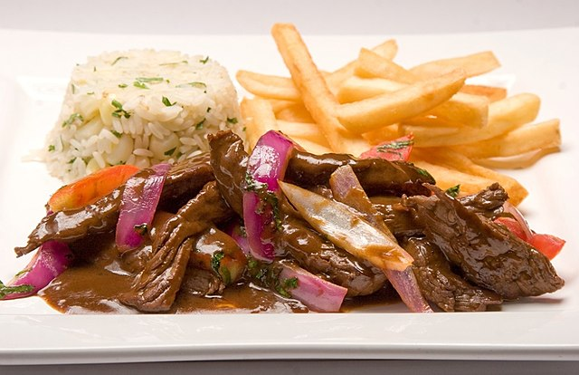

Cristiano Ronaldo dos Santos Aveiro, conocido como Cristiano Ronaldo, es un futbolista portugués. Juega como extremo izquierdo o delantero y su equipo actual es el Al-Nassr F. de la Liga Profesional Saudí.Es internacional absoluto con la selección de Portugal, de la cual es capitán, máximo goleador histórico y jugador con más presencias con 200 partidos, logro alcanzado en las eliminatorias para la Eurocopa 2024, reconocido por el Libro Guinness de los récords.

El lomo saltado es un plato sumamente popular de la llamada cocina fusión que combina la tradición de la gastronomía china de saltear los alimentos con ingredientes peruanos como ají amarillo, cilantro y tomate. Este suculento plato fuerte siempre se acompaña con arroz blanco y papas fritas.

ESTO ES UN PARRAFO
 Facebook
Facebook